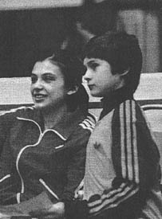

Valentina Shkoda (USSR)
1982 Jr. European FX Champion

Valentina Shkoda (right) and
Natalia Yurchenko
at the 1982 Moscow News International tournament.
Valentina was born on June 23, 1968. She was coached by Ludmila Komarova.
Competition Results
1979
Jr. Friendship Tournament (Druzhba): 8th AA
Jr. ITA-USSR Dual Meet: 1st Team, 7th AA
1980
Jr. USSR-GDR Dual Meet: 1st Team, 3rd AA
1981
Jr. GDR-USSR Dual Meet: 1st Team, 5th AA
Moscow News International: 4th AA (exhibition)
Schoolchildren's Spartakiade (Candidate for Master): 1st Team, 5th AA
1982
Chunichi Cup: 7th AA
Jr. European Championships: 5th AA, 1st FX, 4th V, 6th UB
Riga International: 2nd AA, 1st UB
Tokyo Cup: 2nd V, 2nd FX
USA-USSR Dual Meet: 1st Team, 1st AA
1983
Catania Cup: 4th AA
Moscow Spartakiade: 2nd AA
USSR Cup: 5th AA, 3rd FX, 5th UB, 6th B
1984
Blume Memorial: 5th AA
Riga International: 3rd AA, 3rd UB, 4th V
USSR Championships: 14th AA
USSR Cup: 8th AA
This page was created on November
08, 2004 and was last updated on November 12, 2006.
© Gymn Forum